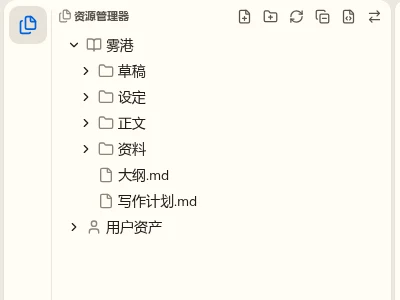
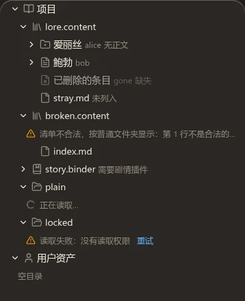

资源管理器打磨 · 第一轮：现状与要改什么
t86。先看现状、定这次改哪些，定了再出静态稿。截图来自开发服务里的样例作品“雾港”（三层正文、一个内容文件夹、图片与长文件名）与 Lab 的状态场景。每条可以选“改”“不改”“要讨论”，也可以写意见。
现状




看到的问题
1. 缩进没有参考线外观
“设定 / 人物 / 沈屿”三四层以后只靠缩进认层级，长列表里看不出谁是谁的子项。
推荐改：每层一条淡竖线，焦点或选中行所在的那一层加深（VS Code 的做法）；减少动态时不做过渡。
2. 排序把“第二卷”排在“第一卷”前行为，改 Spec
现在按拼音或码点比较，中文数字不按数值排：二 < 一，十二 < 三。小说目录几乎都用中文数字。
推荐改：普通文件夹的排序认“第 N 卷 / 章 / 回 / 节”里的中文数字与阿拉伯数字，按数值比，其余按现在的规则。只影响普通文件夹；内容文件夹仍按清单，活页夹归剧情插件。
3. 每个章节都带 .md行为，改 Spec
正文目录里一整列 .md，读起来吵。Spec 现在规定普通文件夹显示真实文件名。
倾向讨论：可以只对 Markdown 文件不显示扩展名（改名框里仍是完整名字，悬停提示完整路径），其它文件照旧；代价是和磁盘上的名字不完全一致，同名的 a.md 与 a.txt 要靠图标区分。
4. 所有文件同一个图标外观
章节、图片、JSON 都是一张白纸，资料/ 里分不出来。
推荐改：按类型给少量图标（Markdown 文本、图片、数据 / 代码、其它），颜色仍是弱化的单色，不做彩色文件图标。
5. 只有正文的内容节点也能展开，展开后是一行“空目录”外观
“沈屿”“林晓”只有自己的正文，箭头点开只有“空目录”。
推荐改：列出后没有子项的节点去掉箭头、不显示“空目录”行；普通的空文件夹照旧显示“空目录”。
6. 内容文件夹显示成 人物.content 加一个书架图标外观
后缀是给程序认的，作者看到的是“人物”；书架图标像一串竖线，不像文件夹。
推荐改：显示“人物”，后缀作淡色副标题（与节点的真实名字同一种写法）；图标换成带标记的文件夹，与普通文件夹同一家族。
7. 两个根和普通目录长得一样版式
“雾港”“用户资产”是同一棵树里的两行，“用户资产”在项目树展开后被挤到很下面，要滚动才找得到。
倾向讨论：A 根行改成小号的分节标题（不缩进、字重加粗），仍在一棵树里；B 拆成两个可折叠的分节，各自滚动（VS Code 的“打开的编辑器 / 项目 / 大纲”）。B 改动大，涉及键盘在两节之间移动。
8. 标题行 6 个按钮一直显示外观
新建文件、新建文件夹、刷新、全部收起、显示清单文件等挤在“资源管理器”几个字后面，含义靠悬停。
推荐改：只在鼠标在侧栏内或侧栏有焦点时显示（VS Code 的做法），常用的新建文件、新建文件夹、全部收起留在外面，刷新与显示清单文件收进“⋯”。这是外壳画的标题动作，改在外壳，其它视图一起受益。
9. 右键菜单：快捷键贴着文字、阴影淡、缺常用项外观 + 动作
快捷键提示是等宽小字、紧跟在名字后面而不是右对齐；菜单和背景几乎分不开；没有“打开”“在侧边打开”“复制路径”“复制相对路径”。
推荐改：快捷键右对齐、用正文字体的弱化色；阴影按 nb-ui 浮层规范（菜单是 nb-ui 的 ContextMenu，改在 nb-ui）；补“打开”“在侧边打开”“复制路径”“复制相对路径”。
10. 没有过滤框新功能
旧应用的资源管理器顶上有搜索框；现在找文件只能靠命令面板的快速打开。
推荐这次不做：快速打开已经能按名字找；树内过滤（输入即筛、保留祖先）是单独的一块功能，值得另开 Task。
11. 章节行不显示字数新功能
写作软件常在章节旁显示字数（欢迎页已经有全书字数）。
推荐这次不做：要给每个文件算字数并跟着保存更新，牵涉 Files 的统计接口；先记下，和活页夹一起考虑。
你自己注意到、想改的地方
上面没列到的：手感、动画、拖动、键盘、窄屏、某个主题下的颜色都可以写。